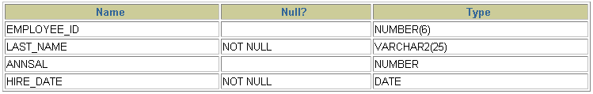

第10章_创建和管理表¶
讲师：尚硅谷-宋红康（江湖人称：康师傅）
1. 基础知识¶
1.1 一条数据存储的过程¶
存储数据是处理数据的第一步。只有正确地把数据存储起来，我们才能进行有效的处理和分析。否则，只能是一团乱麻，无从下手。
那么，怎样才能把用户各种经营相关的、纷繁复杂的数据，有序、高效地存储起来呢？ 在 MySQL 中，一个完整的数据存储过程总共有 4 步，分别是创建数据库、确认字段、创建数据表、插入数据。

我们要先创建一个数据库，而不是直接创建数据表呢？
因为从系统架构的层次上看，MySQL 数据库系统从大到小依次是数据库服务器、数据库、数据表、数据表的行与列。
MySQL 数据库服务器之前已经安装。所以，我们就从创建数据库开始。
1.2 标识符命名规则¶
- 数据库名、表名不得超过30个字符，变量名限制为29个
- 必须只能包含 A–Z, a–z, 0–9, _共63个字符
- 数据库名、表名、字段名等对象名中间不要包含空格
- 同一个MySQL软件中，数据库不能同名；同一个库中，表不能重名；同一个表中，字段不能重名
- 必须保证你的字段没有和保留字、数据库系统或常用方法冲突。如果坚持使用，请在SQL语句中使用`（着重号）引起来
- 保持字段名和类型的一致性：在命名字段并为其指定数据类型的时候一定要保证一致性，假如数据类型在一个表里是整数，那在另一个表里可就别变成字符型了
1.3 MySQL中的数据类型¶
| 类型 | 类型举例 |
|---|---|
| 整数类型 | TINYINT、SMALLINT、MEDIUMINT、INT(或INTEGER)、BIGINT |
| 浮点类型 | FLOAT、DOUBLE |
| 定点数类型 | DECIMAL |
| 位类型 | BIT |
| 日期时间类型 | YEAR、TIME、DATE、DATETIME、TIMESTAMP |
| 文本字符串类型 | CHAR、VARCHAR、TINYTEXT、TEXT、MEDIUMTEXT、LONGTEXT |
| 枚举类型 | ENUM |
| 集合类型 | SET |
| 二进制字符串类型 | BINARY、VARBINARY、TINYBLOB、BLOB、MEDIUMBLOB、LONGBLOB |
| JSON类型 | JSON对象、JSON数组 |
| 空间数据类型 | 单值：GEOMETRY、POINT、LINESTRING、POLYGON； 集合：MULTIPOINT、MULTILINESTRING、MULTIPOLYGON、GEOMETRYCOLLECTION |
其中，常用的几类类型介绍如下：
| 数据类型 | 描述 |
|---|---|
| INT | 从-231到231-1的整型数据。存储大小为 4个字节 |
| CHAR(size) | 定长字符数据。若未指定，默认为1个字符，最大长度255 |
| VARCHAR(size) | 可变长字符数据，根据字符串实际长度保存，必须指定长度 |
| FLOAT(M,D) | 单精度，占用4个字节，M=整数位+小数位，D=小数位。 D<=M<=255,0<=D<=30，默认M+D<=6 |
| DOUBLE(M,D) | 双精度，占用8个字节，D<=M<=255,0<=D<=30，默认M+D<=15 |
| DECIMAL(M,D) | 高精度小数，占用M+2个字节，D<=M<=65，0<=D<=30，最大取值范围与DOUBLE相同。 |
| DATE | 日期型数据，格式'YYYY-MM-DD' |
| BLOB | 二进制形式的长文本数据，最大可达4G |
| TEXT | 长文本数据，最大可达4G |
2. 创建和管理数据库¶
2.1 创建数据库¶
- 方式1：创建数据库
- 方式2：创建数据库并指定字符集
- 方式3：判断数据库是否已经存在，不存在则创建数据库（
推荐）
如果MySQL中已经存在相关的数据库，则忽略创建语句，不再创建数据库。
注意：DATABASE 不能改名。一些可视化工具可以改名，它是建新库，把所有表复制到新库，再删旧库完成的。
2.2 使用数据库¶
- 查看当前所有的数据库
- 查看当前正在使用的数据库
- 查看指定库下所有的表
- 查看数据库的创建信息
- 使用/切换数据库
注意：要操作表格和数据之前必须先说明是对哪个数据库进行操作，否则就要对所有对象加上“数据库名.”。
2.3 修改数据库¶
- 更改数据库字符集
2.4 删除数据库¶
- 方式1：删除指定的数据库
- 方式2：删除指定的数据库（
推荐）
3. 创建表¶
3.1 创建方式1¶
- 必须具备：
- CREATE TABLE权限
- 存储空间
- 语法格式：
CREATE TABLE [IF NOT EXISTS] 表名(
字段1, 数据类型 [约束条件] [默认值],
字段2, 数据类型 [约束条件] [默认值],
字段3, 数据类型 [约束条件] [默认值],
……
[表约束条件]
);
加上了IF NOT EXISTS关键字，则表示：如果当前数据库中不存在要创建的数据表，则创建数据表；如果当前数据库中已经存在要创建的数据表，则忽略建表语句，不再创建数据表。
- 必须指定：
- 表名
- 列名(或字段名)，数据类型，长度
- 可选指定：
- 约束条件
- 默认值
- 创建表举例1：
-- 创建表
CREATE TABLE emp (
-- int类型
emp_id INT,
-- 最多保存20个中英文字符
emp_name VARCHAR(20),
-- 总位数不超过15位
salary DOUBLE,
-- 日期类型
birthday DATE
);

MySQL在执行建表语句时，将id字段的类型设置为int(11)，这里的11实际上是int类型指定的显示宽度，默认的显示宽度为11。也可以在创建数据表的时候指定数据的显示宽度。
- 创建表举例2：
CREATE TABLE dept(
-- int类型，自增
deptno INT(2) AUTO_INCREMENT,
dname VARCHAR(14),
loc VARCHAR(13),
-- 主键
PRIMARY KEY (deptno)
);

在MySQL 8.x版本中，不再推荐为INT类型指定显示长度，并在未来的版本中可能去掉这样的语法。
3.2 创建方式2¶
- 使用 AS subquery 选项，将创建表和插入数据结合起来
-
指定的列和子查询中的列要一一对应
-
通过列名和默认值定义列
CREATE TABLE emp1 AS SELECT * FROM employees;
CREATE TABLE emp2 AS SELECT * FROM employees WHERE 1=2; -- 创建的emp2是空表
CREATE TABLE dept80
AS
SELECT employee_id, last_name, salary*12 ANNSAL, hire_date
FROM employees
WHERE department_id = 80;


3.3 查看数据表结构¶
在MySQL中创建好数据表之后，可以查看数据表的结构。MySQL支持使用DESCRIBE/DESC语句查看数据表结构，也支持使用SHOW CREATE TABLE语句查看数据表结构。
语法格式如下：
使用SHOW CREATE TABLE语句不仅可以查看表创建时的详细语句，还可以查看存储引擎和字符编码。
4. 修改表¶
修改表指的是修改数据库中已经存在的数据表的结构。
使用 ALTER TABLE 语句可以实现：
-
向已有的表中添加列
-
修改现有表中的列
-
删除现有表中的列
-
重命名现有表中的列
4.1 追加一个列¶
语法格式如下：
举例：

4.2 修改一个列¶
-
可以修改列的数据类型，长度、默认值和位置
-
修改字段数据类型、长度、默认值、位置的语法格式如下：
- 举例：
- 对默认值的修改只影响今后对表的修改
- 此外，还可以通过此种方式修改列的约束。这里暂先不讲。
4.3 重命名一个列¶
使用 CHANGE old_column new_column dataType子句重命名列。语法格式如下：
举例：
4.4 删除一个列¶
删除表中某个字段的语法格式如下：
举例：
5. 重命名表¶
- 方式一：使用RENAME
- 方式二：
- 必须是对象的拥有者
6. 删除表¶
-
在MySQL中，当一张数据表
没有与其他任何数据表形成关联关系时，可以将当前数据表直接删除。 -
数据和结构都被删除
- 所有正在运行的相关事务被提交
- 所有相关索引被删除
- 语法格式：
IF EXISTS的含义为：如果当前数据库中存在相应的数据表，则删除数据表；如果当前数据库中不存在相应的数据表，则忽略删除语句，不再执行删除数据表的操作。
- 举例：
- DROP TABLE 语句不能回滚
7. 清空表¶
- TRUNCATE TABLE语句：
- 删除表中所有的数据
-
释放表的存储空间
-
举例：
-
TRUNCATE语句**不能回滚**，而使用 DELETE 语句删除数据，可以回滚
-
对比：
SET autocommit = FALSE;
DELETE FROM emp2;
#TRUNCATE TABLE emp2;
SELECT * FROM emp2;
ROLLBACK;
SELECT * FROM emp2;
阿里开发规范：
【参考】TRUNCATE TABLE 比 DELETE 速度快，且使用的系统和事务日志资源少，但 TRUNCATE 无事务且不触发 TRIGGER，有可能造成事故，故不建议在开发代码中使用此语句。
说明：TRUNCATE TABLE 在功能上与不带 WHERE 子句的 DELETE 语句相同。
8. 内容拓展¶
拓展1：阿里巴巴《Java开发手册》之MySQL字段命名¶
- 【
强制】表名、字段名必须使用小写字母或数字，禁止出现数字开头，禁止两个下划线中间只出现数字。数据库字段名的修改代价很大，因为无法进行预发布，所以字段名称需要慎重考虑。 - 正例：aliyun_admin，rdc_config，level3_name
-
反例：AliyunAdmin，rdcConfig，level_3_name
-
【
强制】禁用保留字，如 desc、range、match、delayed 等，请参考 MySQL 官方保留字。 -
【
强制】表必备三字段：id, gmt_create, gmt_modified。 -
说明：其中 id 必为主键，类型为BIGINT UNSIGNED、单表时自增、步长为 1。gmt_create, gmt_modified 的类型均为 DATETIME 类型，前者现在时表示主动式创建，后者过去分词表示被动式更新
-
【
推荐】表的命名最好是遵循 “业务名称_表的作用”。 -
正例：alipay_task 、 force_project、 trade_config
-
【
推荐】库名与应用名称尽量一致。 -
【参考】合适的字符存储长度，不但节约数据库表空间、节约索引存储，更重要的是提升检索速度。
-
正例：无符号值可以避免误存负数，且扩大了表示范围。

拓展2：如何理解清空表、删除表等操作需谨慎？！¶
表删除操作将把表的定义和表中的数据一起删除，并且MySQL在执行删除操作时，不会有任何的确认信息提示，因此执行删除操时应当慎重。在删除表前，最好对表中的数据进行备份，这样当操作失误时可以对数据进行恢复，以免造成无法挽回的后果。
同样的，在使用 ALTER TABLE 进行表的基本修改操作时，在执行操作过程之前，也应该确保对数据进行完整的备份，因为数据库的改变是无法撤销的，如果添加了一个不需要的字段，可以将其删除；相同的，如果删除了一个需要的列，该列下面的所有数据都将会丢失。
拓展3：MySQL8新特性—DDL的原子化¶
在MySQL 8.0版本中，InnoDB表的DDL支持事务完整性，即DDL操作要么成功要么回滚。DDL操作回滚日志写入到data dictionary数据字典表mysql.innodb_ddl_log（该表是隐藏的表，通过show tables无法看到）中，用于回滚操作。通过设置参数，可将DDL操作日志打印输出到MySQL错误日志中。
分别在MySQL 5.7版本和MySQL 8.0版本中创建数据库和数据表，结果如下：
CREATE DATABASE mytest;
USE mytest;
CREATE TABLE book1(
book_id INT ,
book_name VARCHAR(255)
);
SHOW TABLES;
（1）在MySQL 5.7版本中，测试步骤如下： 删除数据表book1和数据表book2，结果如下：
再次查询数据库中的数据表名称，结果如下：
从结果可以看出，虽然删除操作时报错了，但是仍然删除了数据表book1。
（2）在MySQL 8.0版本中，测试步骤如下： 删除数据表book1和数据表book2，结果如下：
再次查询数据库中的数据表名称，结果如下：
mysql> show tables;
+------------------+
| Tables_in_mytest |
+------------------+
| book1 |
+------------------+
1 row in set (0.00 sec)
从结果可以看出，数据表book1并没有被删除。